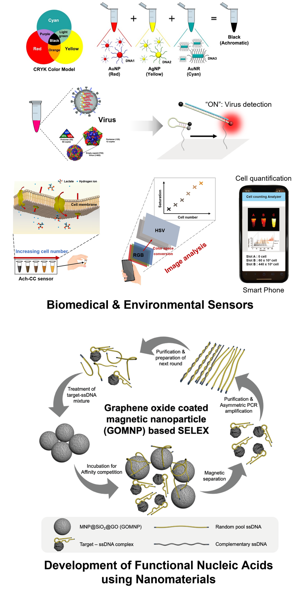
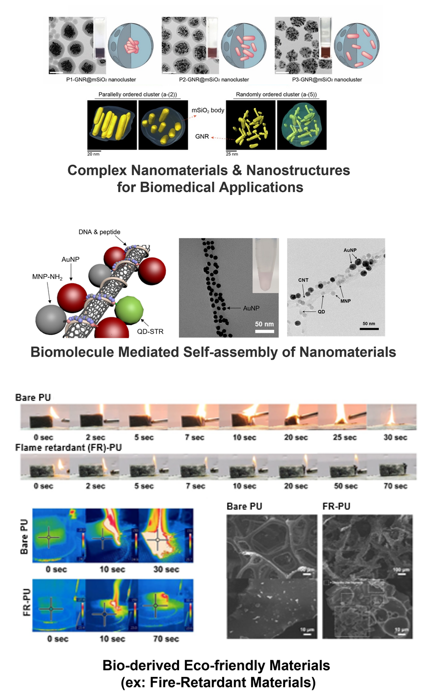

Research
Our work is highly interdisciplinary with interest at the intersection of Materials Science, Chemistry, and Bioengineering.
We are using chemical synthesis or state of the art nanofabrication technique to obtain nanoscale materials or structures with desired optical or electronic properties. Those precisely controlled nanoscale structures can be combined with biomolecules, such as functional DNA or peptides, which has been recently emerged as a promising building block with excellent sensitivity and selectivity on a broad range of molecules. By synergistically integrating both biological and nanoscale systems, we are aiming to develop advanced tools that can play crucial role in next generation biomedical, environmental, and energy related applications.
Research topics
- Bionanotechnology; Nanomaterials & Nanostructures for Biomedical Applications
- Biomedical & Environmental Sensors
- Materials for Cell & Tissue Engineering
- Bio-Derived Eco-Friendly and Sustainable Materials (ex: Green Flame Retardant Materials)
- Artificial Intelligence-assisted Material Design and Characterization

